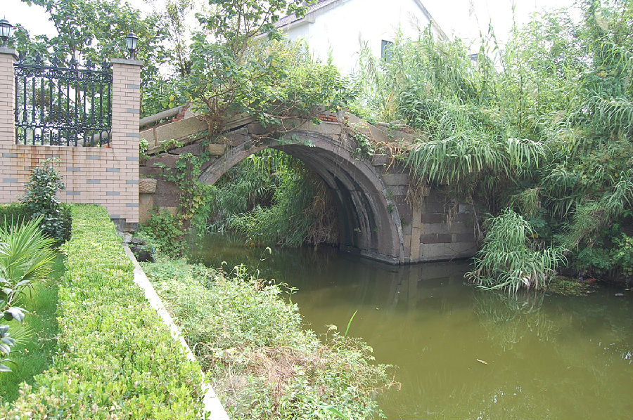

嘉兴市文物保护网 · 市级文物保护点 · 2022-05-16 · 原文

凤仪桥位于秀洲区新塍镇康和桥村7组，南北横跨凤仪桥港，又名张墩环桥。始建年代不详，现桥建于嘉庆十九年（1814）。单孔有栏石拱桥，全长13.2米，桥面宽2.5米，拱跨5.6米，矢高3米，南北各有台阶12级。共4个天磐石。东西桥额上刻有“凤仪桥”，东西桥联分别为：“晓日浴红春水上，遥山横碧画桥西”“千顷桑麻歌大有，万家烟井颂升平”该桥桥额、楹联清晰，具有较高的历史和艺术价值。2021年被公布为嘉兴市文物保护点。